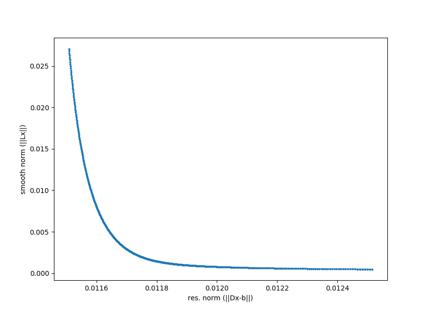

Lifetime density analysis¶
In contrast to global analysis where just a limited number of transitions is considered, Lifetime density analysis (LDA) tries to explain the data with a discrete set of time constants. Let \(\mathbf{D}\) be a matrix where the ith column is filled with \(e^{-t/\tau_i}\) where \(\tau\) is the time constant. Further let \(\mathbf{A}\) be the recorded data matrix. Then the data can potentially reconstructed by finding a matrix \(\mathbf{x}\) solving
which contains the amplitudes (pre-factors) for a certain expontential time course at a specific frequency. Above equation is a ill-posed problem with no unique solution. Applying Tikhonov regularization yields a penalty on large numbers of the solution \(\mathbf{x}\) and thus prefers zero. In terms of minimization problem:
with \(\alpha\) as a constant which defines the balance between the residual (left) and smooth norm (right). The algorithm uses the identity matrix for \(\mathbf{L}\) leading to the Euclidian 2-norm.
But how to choose \(\alpha\)? For this, the so-called L-curve as shown below can provide some guidance. It plots the residual norm against the smooth norm. A good balance between the two are at the point with highest curvature.
{kind=link}
LDA can be performed with the trtoolbox.lda.dolda() method. The returned objext is trtoolbox.lda.Results.